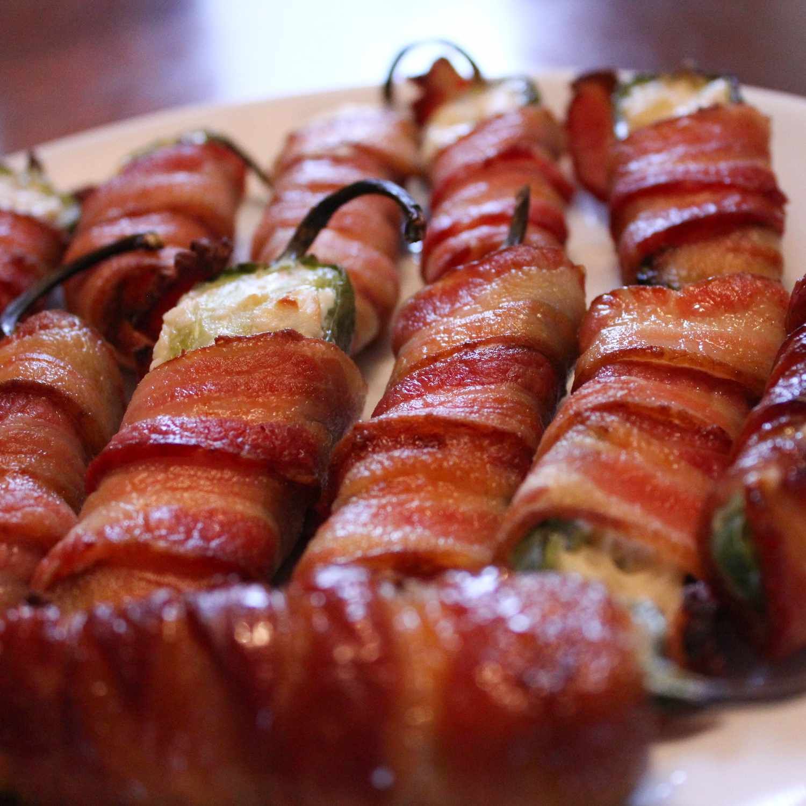

Grilled Bacon Jalapeño Wraps

Description
Delicious grilled jalapeño peppers stuffed with cream cheese.
Easy to make on the grill!
Ingredients
- 1 (8 ounce) package cream cheese
- 6 fresh jalapeno poppers, halved lengthwise and seeded
- 12 slices of bacon
- 12 toothpicks, soaked in water (optional)
Steps
-
Preheat an outdoor grill for high heat and lightly oil the gate
-
Spread cream cheese in each jalapeno half; wrap with bacon.
Secure with a toothpick if needed
-
Cook on the preheated grill until bacon is crispy, turning often,
about 10 minutes.